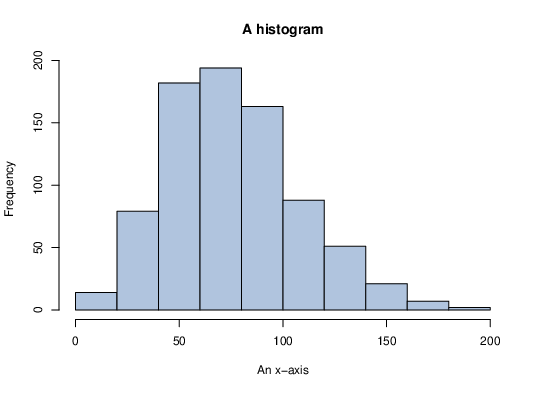

Sample Slides
Series Results
Expectation
Discrete Random Variables
Continuous Random Variables
Families of Discrete Random Variables I
Bernoulli random variables,
Binomial random variables,
Poisson random variables,
Families of Discrete Random Variables II
Geometric random variables,
Negative Binomial random variables,
Discrete Uniform random variables,
Families of Continuous Random Variables I
Uniform random variables, ,
Exponential random variables, ,
Normal random variables, ,
Families of Continuous Random Variables II
Gamma random variables, ,
Beta random variables, ,
Column example
Here is some text in a left hand column.
